Pod Topology Spread Constraints
Skew 的計算
skew = 目前 topology 中的 Pods 數量 - topology 中最少 Pods 數量
參考: Introducing PodTopologySpread
範例 1: topology key: zone
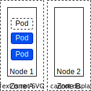
skew = 3 - 0 = 3
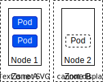
skew = 1 - 1 = 0
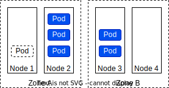
skew = 4 - 2 = 2
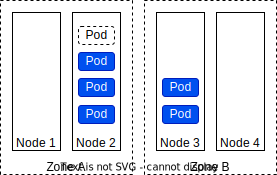
skew = 4 - 2 = 2
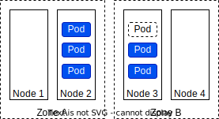
skew = 3 - 3 = 0
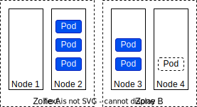
skew = 3 - 3 = 0
範例 2: topology key: node
skew = 1 - 0 = 1
skew = 4 - 0 = 4
skew = 3 - 0 = 3
skew = 1 - 0 = 1
範例 1: one topology spread constraint
Cluster 有 4 個 Node，3 個 Pod (label: foo:bar)，分別被部署到 Node 1, Node 2, Node 3。
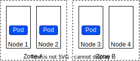
新進來的 Pod 目標要就目前的狀態，平均分散在個 Zone。可以使用以下配置。
1 2 3 4 5 6 7 8 9 10 11 12 13 14 15 16 17 | |
- Pod 分配的數量與最少數量，最多相差 1
- Node 以
zone分群，Pod 應平均分配至各群。 - 當新進的 Pod 無法滿足條件時，保持 pending 不要分配 Node。
- 限制條件套用在 label
foo: bar的 Pod 上。
✕ 新進來的 Pod 被分配至 Zone A
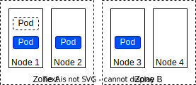
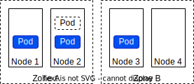
skew = 3 - 1 = 2，超過 maxSkew: 1 (line 9-10) 的限制。
✓ 新進來的 Pod 被分配至 Zone B
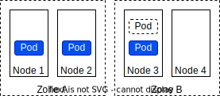
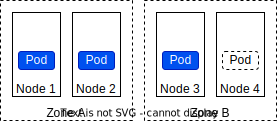
skew = 2 - 2 = 0，符合 maxSkew: 1 (line 9-10) 的限制。
範例 2: multiple topology spread constraints
Cluster 有 4 個 Node，3 個 Pod (label: foo:bar)，分別被部署到 Node 1, Node 2, Node 3。
新進來的 Pod 目標要就目前的狀態，平均分散在個 Zone 與 Node。可以使用以下配置。
1 2 3 4 5 6 7 8 9 10 11 12 13 14 15 16 17 18 19 20 21 22 23 | |
- Pod 分配的最大數量與最少數量，最多相差 1
- Node 以
node分群，Pod 應平均分配至各群。 - 當新進的 Pod 無法滿足條件時，保持 pending 不要分配 Node。
- 限制條件套用在 label
foo: bar的 Pod 上。
✕ 新進來的 Pod 被分配至 Zone A
Zone: skew = 3 - 1 = 2，超過 maxSkew: 1 (line 9-10) 的限制。
✕ 新進來的 Pod 被分配至 Zone B 的 Node 3
Zone: skew = 2 - 2 = 0，符合 maxSkew: 1 (line 9-10) 的限制。
Node: skew = 2 - 0 = 2，超過 maxSkew: 1 (line 15-16) 的限制。
✓ 新進來的 Pod 被分配至 Zone B 的 Node 4
Zone: 2 - 2 = 0，符合 maxSkew: 1 (line 9-10) 的限制。
Node: 1 - 1 = 0，符合 maxSkew: 1 (line 15-16) 的限制。
範例 3: conflicting topology spread constraints
考慮範例 2 的設定遭遇衝突的狀況
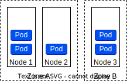
雖然目前的狀態符合設定的限制，不過新進的 Pod 沒有可能有排成可以滿足限制，故會處於 Pending 狀態。
✕ 新進來的 Pod 被分配至 Zone A
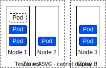
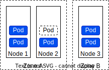
Zone: skew = 4 - 2 = 2，超過 maxSkew: 1 (line 9-10) 的限制。
✕ 新進來的 Pod 被分配至 Zone B
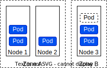
Zone: skew = 3 - 3 = 0，符合 maxSkew: 1 (line 9-10) 的限制。
Node: skew = 3 - 1 = 2，超過 maxSkew: 1 (line 15-16) 的限制。
解決方法
- 調整
maxSkew: 2(line 15) - 調整
whenUnsatisfiable: ScheduleAnyway(line 17)
範例 4: topology spread constraints with node affinity
Cluster 有 5 個 Node，被部署到 Zone A, Zone B, Zone C。
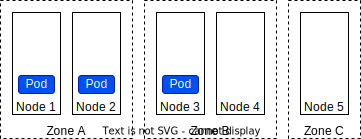
我們要排除 Zone C 不要被分配 Pod。也就是說，Pod 只會被安排到 Zone A, Zone B 的 Node 上執行。可以使用以下配置。
1 2 3 4 5 6 7 8 9 10 11 12 13 14 15 16 17 18 19 20 21 22 23 24 25 26 | |